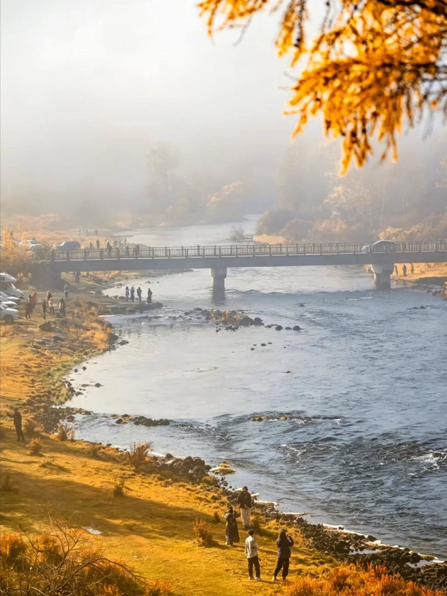

额尔古纳的真正判断标准是日期
不是“去或不去”，而是看北部叶色有没有撑到你抵达的那一天。9月中旬价值很高；接近国庆时，湿地仍有河形，但彩林不保证。
小红书实景：9月16日日落层次丰富；9月30日有笔记反馈“已经全光了”。
9月25日—10月3日，武汉出发，乌兰浩特进、海拉尔出。主线留给阿尔山、蘑阿公路和柴河；额尔古纳不是删掉，而是只在实景仍有秋色、回程航班足够晚时追加。

小红书实景笔记显示，9月16日仍有金色湿地与日落，9月30日已有游客反馈树叶基本落光。今年又偏早秋，因此默认保留纯南线，出发前7天再决定是否追加约190公里和一晚住宿。
不是“去或不去”，而是看北部叶色有没有撑到你抵达的那一天。9月中旬价值很高；接近国庆时，湿地仍有河形，但彩林不保证。
不要只搜“阿尔山国家森林公园”“呼伦贝尔大草原”。页面已经把金江沟游客中心、乌苏浪子湖、不冻河观景台、莫尔格勒河景区等准确名称放进地图入口。
车身录像只是底线。四条轮胎的磨损、胎压、侧壁与备胎工具更关键；已有救援复盘显示，门店拒换磨损轮胎会直接演变成卡线爆胎和数小时拖车。
点击节点定位；地图线沿真实道路绘制，高德链接负责实时导航。林区施工、单向通行和临时封闭必须以出发当天为准。
路线沿真实道路绘制，仅作参考；点击主节点会适配相邻路线，机位导航以高德搜索结果和现场开放情况为准。
每天一个主目标，沿途留一点余裕。点选日期查看当天路线、拍摄参考和准备清单。
落地取车后先完成验车、保险确认、加油、离线地图和补给。若下午才拿到车，不在天黑后硬赶阿尔山。
白狼峰安排清晨，鹿村只留体验时间。下午回市区走火车站、五里泉，晚上休整。
驼峰岭天池优先；三潭峡保留。石塘林与杜鹃湖时间紧可二选一，不把同类天池全部走完。
05:30左右到乌苏浪子湖等晨雾；蓝房子从安全山坡取景；不冻河观景台安排下午或日落。
把蘑阿公路当作一整天的景点。只在正规停车区停靠，不进入无标识林道，不在林区用火。
上午月亮天池，傍晚十大湾。中间回镇上补油与休息，不继续追加同类天池。
最长转场。近期小红书笔记提示塔尔气-柴河方向存在施工信息，前一晚必须重算路线，宁可绕行也不走导航显示可通、现场难行的路。
看九曲河道后返回海拉尔，下午加油、洗车、整理行李，为异地还车留余量。
提前60-90分钟处理油量、车损复核、发票与异地还车费用，不安排跨城景点。
清单会保存在当前浏览器。车辆状态、合同与救援流程比“早点到第一处景点”更重要。
移动端横向滑动查看。默认四个基地；选择额尔古纳支线后，海拉尔改为一晚，并追加额尔古纳一晚。